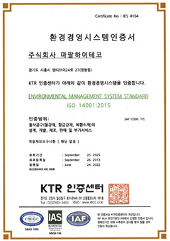
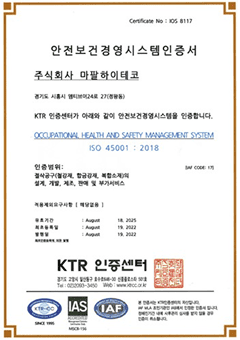

Environment
우리는 환경을 경쟁력으로 보고,
더 높은 기준과 실행으로 성장과
신뢰를 만든다.
환경안전보건 목표
법규 준수 및 근로자 개개인의 안전 확보
마팔하이테코는 지구환경 보존 및 환경관련 법규의 철저한 준수와 근로자 개개인의 안전과 건강 확보가 기업 활동에 필수 불가결한 요소임을 인식하여, 환경안전경영방침을 수립하여 모든 경영활동에 적용하고 있습니다.
- 안전보건 목표
-
중대재해/ 중대산업사고 발생 Zero
업무상 상해 및 질병 발생 최소화
- 환경 목표
-
환경법규 위반 및 환경사고 발생 Zero
환경오염물질 배출 Zero
환경안전보건 과제
사람과 환경을 최우선하는 지속가능 현장관리
현장 점검과 데이터 기반 건강관리를 통해 안전·보건 리스크를 줄이고, 쾌적한 작업환경을 유지합니다. 강화된 배출 자체기준과 에너지·자원 절감 실행으로 환경 영향을 지속적으로 낮춥니다.
환경안전보건 정책
미래 에너지 혁신을 위한 친환경 경영
무재해 추구 및 친환경 경영을 통해 이해관계자로부터 신뢰 받는 기업이 되고 사회와 함께 성장∙발전하는 것을 목표로 안전보건환경 경영을 추구합니다.
-
안전·보건 경영을 최우선 과제로 정의하고 사람과 설비의 안전을 위한 지속적 개선과 예방활동을 통해,
안전하고 건강한 사회 구축에 앞장 선다. 안전기술을 혁신하고 역량을 고도화하여,
사회의 안전·보건수준 향상을 위해 선도적 역할을 수행한다. 환경경영을 핵심과제로 정의하고 온실가스 감축·오염물질 최소화를 통해,
지구 환경을 보전하는데 실천한다. 친환경 기술개발과 사업운영을 통해 환경의 새로운 가치를 지속 창출하여,
미래 에너지를 혁신한다.
환경안전 인증서
환경보전과 안전한 일터를 위한 글로벌 스탠다드
마팔하이테코는 환경·생태계의 오염 방지 및 대내 외 환경 관련 법 규제를 철저히 준수하고, 나아가 기후변화 / 지구온난화 등 기업에 요구 되는 사회적 책임을 다하기 위해 ISO14001(환경경영시스템)을 구축하여 운영 중입니다.
마팔하이테코는 근로자의 업무와 관련된 상해 및 건강상 장해 예방, 더 안전하고 건강한 작업 환경 조성 및 위험으로부터 자유로운 근무환경 구축이라는 기업의 안전 보건 목표 달성을 위해 ISO45001(안전보건경영시스템)을 구축하여 운영 중입니다.


활동 사항
현장 중심 환경안전 경영방침
마팔하이테코는 환경 보존 및 환경관련 법규의 철저한 준수와 근로자 개개인의 안전과 건강 확보가 기업 활동에 필수 불가결한 요소임을 인식하여, 환경안전경영방침을 수립하여 모든 경영활동에 적용하고 있습니다.